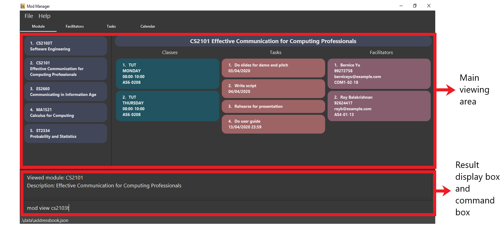
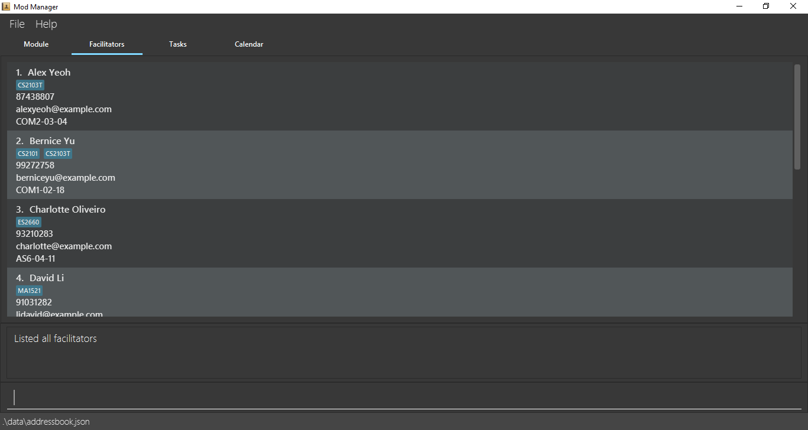
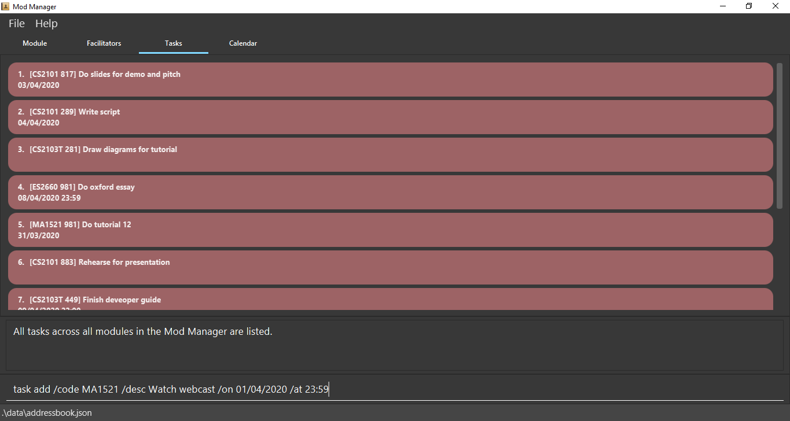
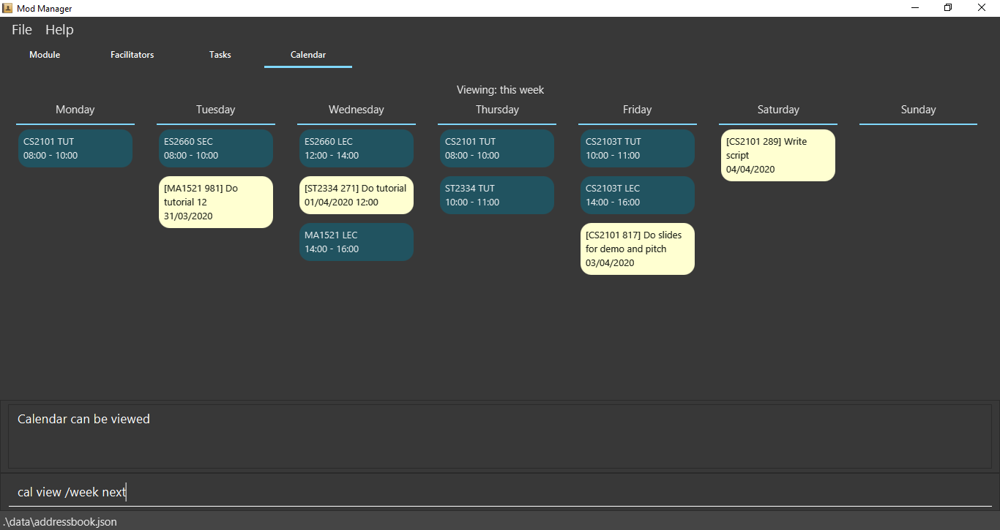

By: Team AY1920S2-CS2103T-F10-4 Since: Jan 2020 Licence: MIT
1. Introduction
Welcome to Mod Manager!
Mod Manager is a desktop application that assists students in managing tasks, schedules, and contacts for their modules in a semester.
More importantly, Mod Manager is optimized for those who prefer to work with a Command Line Interface (CLI) while still having the benefits of a Graphical User Interface (GUI).
If you can type fast, Mod Manager can get your management of tasks, schedules and contacts done faster than traditional GUI apps.
Interested? Jump to the Section 3, “Quick Start” to get started. Enjoy!
2. About
This user guide helps you to master how to use Mod Manager. It explains the features and commands supported by Mod Manager, with examples to illustrate how the application works.
Note the following symbols used in this document:
Symbol |
Meaning |
Enter |
The enter button on the keyboard. |
Information that you need to know. |
3. Quick Start
3.1. Installing Mod Manager
Here are the steps to get you started with using Mod Manager:
-
Ensure you have Java
11or above installed in your Computer. -
Download the latest
ModManager.jarhere. -
Copy the file to the folder you want to use as the home folder for your Mod Manager.
-
Double-click the file to start the application. The GUI should appear in a few seconds.
Figure 1. GUI for Mod Manager -
Type the command in the command box and press Enter to execute it.
e.g. typinghelpand pressing Enter will open the help window.Here are some example commands that you can try:
-
cmd all: lists all available commands in our Mod Manager. -
mod add /code CS3233 /desc Competitive Programming: adds the module CS3233 to the module list. -
class add /code CS3233 /type LEC /at FRIDAY 14:00 16:00 /venue i3-Aud: adds a lecture class to the module CS3233. -
task add /code CS3233 /desc Complete Pset 10 /on 30/04/2020 /at 23:59: adds a task to the module CS3233. -
facil add /name Steven Halim /email stevenha@comp.nus.edu.sg /code CS3233: adds a facilitator to the module CS3233. If you are rushing to write an email to your lecturer, you can refer to this conveniently. -
cal view /week this: views your schedules for the current week. You should see the CS3233 lecture group that you added above. -
exit: exits the application.
-
-
Refer to Section 4, “Features” for details of each command.
3.2. Using Mod Manager
This section offers an overview of Mod Manager’s layout so that you can find what you need easily.
There are two main areas in Mod Manager:
-
A result display box and command box at the bottom of the screen.
-
A main viewing area that occupies most of the screen.
The command box is the area for you to enter commands. The result of each command will be shown in the result display box, immediately above the command box.
The main viewing area shows all the contents for one of the four tabs at any point in time. The four tabs are Module, Facilitators, Tasks and Calendar
-
Module tab contains information about lessons, tasks and facilitators for a particular module. It also shows the list of modules you currently have.
 Figure 3. Module tab
Figure 3. Module tab -
Facilitators tab contains information about all the facilitators you currently have.
Figure 4. Facilitators tab -
Tasks tab contains information about all the tasks you currently have. Completed tasks are shown in green, whereas the rest are uncompleted tasks.
Figure 5. Tasks tab -
Calendar tab shows tasks and lessons in a week.
Figure 6. Calendar tab
4. Features
This section describes the main features of Mod Manager and how to use them.
The features are grouped into six categories:
Additionally, the upcoming features section offers a preview of what you can expect in Mod Manager v2.0.
Command Format
This document uses the following notation to describe command formats:
-
Words in
UPPER_CASEare the parameters to be supplied by the user.
e.g. In the command formatmod add /code MOD_CODE,MOD_CODEis a parameter which can be used asmod add /code CS2103T. -
Items in square brackets are optional.
e.g/code MOD_CODE [/desc DESCRIPTION]can be used as/code CS2103T /desc Software Engineeringor as/code CS2103T. -
Items with
… after them can be used multiple times, including 0 times.
e.g.[MORE_DESCRIPTIONS]…can be used asSoftware(once),Software Engineering(twice),SWE AI Algorithmsetc. -
Parameters can be used in any order unless otherwise specified. e.g. if the command specifies
/code MOD_CODE /desc DESCRIPTION,/desc DESCRIPTION /code MOD_CODEis also acceptable.
4.1. General Features
The following commands carry out general operations in Mod Manager.
4.1.1. Viewing help : help
You can open the help window that displays a link to our user guide.
Format:
-
help
4.1.2. Undoing previous commands : undo
You can restore the Mod Manager to the state before the previous undoable command was executed.
Format:
-
undo
4.1.3. Redoing previously undone commands : redo
You can reverse your undone actions.
Format:
-
redo
4.1.4. Listing commands : cmd
Listing all commands:
Lists all valid command groups.
The command groups available in Mod Manager are the words in bold you have seen throughout this document.
These include: facil, mod, task, …
Format:
-
cmd all
Listing commands for a specific feature:
Lists commands for a specific group.
Format:
-
cmd group COMMAND_WORD
Example: cmd group task
4.1.5. Automatic command guidance
Provides guidance for mistyped commands by showing a list of possible valid commands.
The command(s) closest to your mistyped one will be shown: both the syntax format(s) and context-dependent examples.
4.1.6. Clearing all entries : clear
You can clear all entries from Mod Manager. All the lists of modules, classes, facilitators and tasks that you have will be cleared.
Format:
-
clear
Example:
Suppose your semester has ended and you do not want to see any information related to those modules you have taken in that semester anymore.
You can type clear as shown below.
clearAfter pressing Enter, Mod Manager is empty. All the entries you have are cleared.
clear4.1.7. Exiting the program : exit
You can exit the program. Upon closing the application, the Mod Manager data will be saved automatically in your hard disk.
Format:
-
exit
4.2. Module feature : mod
The commands in this section carry out operations on the module list in Mod Manager. Executing these commands will bring you to the Module tab.
4.2.1. Adding a module
You can add a module to Mod Manager.
Format:
-
mod add /code MOD_CODE [/desc DESCRIPTION]
Command properties:
Examples:
You can add a module to the module list.
To add a module with the module code CS2103T and description Software Engineering,
you can type the following command:
mod add /code CS2103T /desc Software Engineering
mod add /code CS2103T /desc Software Engineeringmod add /code CS2103T /desc Software EngineeringYou can also add a module without description.
To add a module with the module code CS2101,
you can type the following command:
mod add /code CS2101
mod add /code CS2101mod add /code CS21014.2.2. Viewing all modules
You can view a list of all modules.
Format:
-
mod list
Example:
You can view all modules in Mod Manager. To see a list of all modules, you can type the following command:
mod list
mod list4.2.3. Viewing information of a module
You can view all classes, tasks and facilitators for a module.
Format:
-
mod view INDEX -
mod view MOD_CODE
Command properties:
Examples:
You can view a module using the index in the module list. To view all classes, tasks and facilitators for the second module in the module list, you can type the following command:
mod view 2
mod view 2
mod view 2Alternatively, you can view a module using the module code.
To view all classes, tasks and facilitators for the module CS2103T,
you can type the following command:
mod view CS2103T
mod view CS2103Tmod view CS2103T4.2.4. Editing a module
You can edit the information of a module.
Format:
-
mod edit INDEX [/code NEW_MODE_CODE] [/desc DESCRIPTION] -
mod edit MOD_CODE [/code NEW_MODE_CODE] [/desc DESCRIPTION]
Command properties:
Examples:
You can edit a module using the index in the module list.
To update the module code of the first module in the module list to CS2113T,
you can type the following command:
mod edit 1 /code CS2113T
mod edit 1 /code CS2113Tmod edit 1 /code CS2113TAlternatively, you can edit a module using the module code.
To update the description of the module CS2101 to Effective Communication for Computing Professionals,
you can type the following command:
mod edit CS2101 /desc Effective Communication for Computing Professionals
mod edit CS2101 /desc Effective Communication for Computing Professionalsmod edit CS2101 /desc Effective Communication for Computing ProfessionalsYou can also remove the description of a module without specifying any input after the prefix /desc.
To remove the description of the third module in the module list,
you can type the following command:
mod edit 3 /desc
mod edit 3 /descmod edit 3 /desc4.2.5. Deleting a module
You can delete a module from Mod Manager. All classes, tasks and facilitators for that module will also be deleted.
Format:
-
mod delete INDEX -
mod delete MOD_CODE
Command properties:
Examples:
You can delete a module using the index in the module list. To delete the second module in the module list, you can type the following command:
mod delete 2

mod delete 2
mod delete 2Alternatively, you can delete a module using the module code.
To delete the module with the module code CS2103T,
you can type the following command:
mod delete CS2103T
mod delete CS2103Tmod delete CS2103T4.3. Class feature : class
You can add, find, edit or delete classes within Mod Manager.
When managing your classes, you should take note of the following areas in the main viewing area. To find the main viewing area, you can refer to section 3.1.
4.3.1. Adding a class
You can add a class to a module.
Format:
-
class add /code MOD_CODE /type CLASS_TYPE /at DAY START_TIME END_TIME [/venue VENUE]
Command properties:
Example:
You have a CS2103T lecture on Friday from 14:00 to 16:00 at i3-Aud. Before adding that class, Mod Manager looks like what you see in the figure below.
To add that class, you can type:
class add /code CS2103T /type LEC /at FRIDAY 14:00 16:00 /venue i3-Aud.
You will see a new class added to the module CS2103T as shown in the figure below.
4.3.2. Finding classes by day
You can find classes occurring on a particular day.
Format:
-
class find /at DAY
Command properties:
Example:
To know what classes you have on Friday, you can type class find /at friday and you will be able to see the classes in the result display box as shown in the figure below.
4.3.3. Finding next class
You can find the next class that will start soon.
Format:
-
class find /next
Example:
After typing class find /next, you will be directed to the module’s page and you will see the class as shown in the figure below.
4.3.4. Editing a class
You can edit the information of the class. The class to be edited is selected by its index in the displayed module’s class list. You can view the module’s class list by using mod view MOD_CODE as stated in section 3.2.3.
Format:
-
class edit INDEX /code MOD_CODE [/code NEW_MOD_CODE] [/type CLASS_TYPE] [/at DAY START_TIME END_TIME] [/venue VENUE]
Command properties:
Example:
Let’s say that the venue of the CS2103T lecture you just added changed to Home. You can edit the class by typing class edit 1 /code CS2103T /venue Home. Mod Manager will direct you to the module’s page and it will reflect the updated venue as seen below.
4.3.5. Deleting a class
You can delete the class from the module. The class to be deleted is selected by its index in the displayed module’s class list. You can view the module’s class list by using mod view MOD_CODE as stated in section 3.2.3.
Format:
-
class delete INDEX /code MOD_CODE
Command properties:
Example:
You can delete the CS2103T lecture by typing class delete 1 /code CS2103T. The class will not appear in the class list under the module CS2103T as seen below.
4.4. Task feature : task
The commands in this section carry out operations on the task list in Mod Manager. Executing these commands will bring you to the Tasks tab.
4.4.1. Adding a task
Adds a task to a module.
Format:
-
task add /code MOD_CODE /desc DESCRIPTION [/on DATE] [/at TIME]
Example: task add /code CS3230 /desc Programming Assignment 2 /on 20/02/2020 /at 23:59
Command properties:
4.4.2. Editing a task
From here on, you will be introduced to Mod Manager’s task ID system.
You can edit a task’s description, its date and time details, or both.
Format:
-
task edit MOD_CODE ID_NUMBER [/desc DESCRIPTION] [/on DATE] [/at TIME]
Mod Manager will find the task associated with the task ID number provided and update the information correspondingly.
Example: task edit CS2103T 848 /desc UG submission /on 12/04/2020 /at 23:59
Since you may want to remove the date and time of a task, Mod Manager provides you a way to do so.
Format:
-
task edit MOD_CODE ID_NUMBER [/desc DESCRIPTION] /on non
Example: task edit CS2103T 848 /on non
4.4.3. Deleting a task
You can delete a task from Mod Manager’s system.
Format:
-
task delete MOD_CODE ID_NUMBER
Example: task delete CS2103T 973
4.4.4. Marking a task as done
You can mark the task as done in the module in Mod Manager.
|
Note
|
A newly added task as above will be considered as not done by default. |
|
Note
|
Editing a task will not change the done/not done status of the task. |
|
Note
|
Tasks that are already marked as done cannot be re-marked as done. |
Format:
-
task done /code MOD_CODE /id ID_NUMBER
Command properties:
Example:
You can mark a task as done in the module. To mark the task with
task ID ID_NUMBER in module MOD_CODE to be done, you can type in the following command:
task done /code CS2105 /id 224
and hit Enter
task done /code CS2105 /id 224task done /code CS2105 /id 224The task card has changed to green; which means our task has been marked as done. Hooray! We just completed a task.
4.4.5. Viewing all tasks across all modules
You can view a list of all tasks across all modules in Mod Manager. This is great when you need an overview of all tasks that you need to complete at present.
Format:
-
task list
Example:
By typing the command above, you should see the following:
task list shows a list of all tasks in Mod Manager4.4.6. Viewing tasks for a specific module
If you want to find tasks for a specific module in Mod Manager, this is the command for you to use!
Format:
-
task module /code CS2103T
Command properties:
|
Note
|
Alternatively, you can also view the tasks for a specific module in the Module tab (main dashboard). |
Example:
If you want a list of current tasks for the module CS3230, you can type in the following command:
task module /code CS3230
and hit Enter
It is not compulsory for you to be at the Tasks tab before typing in this command. Mod Manager will automatically redirect you to the Tasks tab if you are currently at another tab.
CS3230 are listed4.4.7. Viewing all tasks not done/finished
Previously, we know that we can mark a task as done, so as to organise, manage, and plan our tasks better. Now, with this command, you can see all the tasks that have not yet been finished.
Format: task undone
task undone, all tasks are listedBy typing the command above and hit Enter, you should only see uncompleted tasks, which are in dark red color:
4.4.8. Finding tasks by description
You are browsing through the task list. But there are too many tasks! You suddenly remember a specific task that you want to do, but you can only vaguely remember its description, e.g. something related to assignment.
This command is exactly what you need. In your case, you can find all tasks that
contain the word assignment, which may include Programming Assignment,
written assignment, Take-home Lab Assignment (note that it can be case-insensitive).
If you remember multiple words in your wanted tasks, you may also type in multiple words as you want.
Tasks that meet at least one of the keywords you provided will be shown to you.
Format:
-
task find DESCRIPTION [MORE_DESCRIPTIONS]…
Command properties:
Examples:
To find tasks that contain the word oral, assign, or tut in their description,
you can type in the following command:
task find oral assign tut and press Enter
task find oral assign tut, all matching tasks are displayed.Explanation:
- Oral Presentation 2 contains Oral which matches oral (case-insensitive).
- Programming Assignment 2 contains Assignment which matches assign (case-insensitive, and words can be partial match)
- Similarly, Assignment 3 will match assign, and Tutorial will match tut
- As long as a task’s description matches one of the keywords provided, it will be shown.
You can try typing in task find assign tut oral and press Enter. This will return the same list
of tasks, since the ordering of the keywords does not matter.
Other examples:
-
task find homework
Finds all tasks that contain the wordhomeworkin their description -
task find math coding
Finds all tasks that contain the wordmathorcodingin their description
4.4.9. Searching tasks by date
With this command, you can search for all tasks that occur on your specified date, month, or year.
|
Note
|
Tasks are only searched for its date. Tasks that do not have dates or times will not be found in this list. |
Format:
-
task search [/date DATE] [/month MONTH] [/year YEAR]
Command properties:
Example:
You can search for tasks that are due on the submission date of CS2103T for AY19/20 S2
(13 April). To find tasks happening on 13 April,
you can type task search /date 13 /month 4 and press Enter. This will return all tasks
that are happening on 13 April.
task search /date 13 /month 4, all tasks are listedNote that the content above may be different from what is currently on your Mod Manager. You may add
or edit the tasks to match we have above
task search /date 13 /month 4, only matching tasks are listedExplanation: the two tasks both have date as 13 and month as 4.
Other examples:
-
task search /date 1
Searches for all tasks happening on the first day of the month, in any year. Who wants to study on New Year’s Day really? -
task search /month 4 /year 2020
Searches for all tasks in the current month (at the time of writing, April 2020). -
task search /year 2020
Searches for all tasks in this year (at the time of writing). This will be useful if Mod Manager is used over a long period of time. -
task search /date 14 /month 2 /year 2021
Searches for all tasks happening on 14/02/2021.
4.5. Facilitator feature : facil
The commands in this section carry out operations on the facilitator list in Mod Manager. Executing these commands will bring you to the Facilitators tab.
4.5.1. Adding a facilitator
You can add a facilitator to Mod Manager.
Format:
-
facil add /name FACILITATOR_NAME [/phone PHONE] [/email EMAIL] [/office OFFICE] /code MOD_CODE [MORE_MOD_CODES]… -
facil add /name FACILITATOR_NAME [/phone PHONE] [/email EMAIL] [/office OFFICE] /code MOD_CODE [/code MORE_MOD_CODES]…
Command properties:
Examples:
You can add a facilitator to the facilitator list.
To add a facilitator with the name Akshay Narayan, phone 98765432 and email dcsaksh@nus.edu.sg to the modules CS2103T and CS3243,
you can type the following command:
facil add /name Akshay Narayan /phone 98765432 /email dcsaksh@nus.edu.sg /code CS2103T CS3243
facil add /name Akshay Narayan /phone 98765432 /email dcsaksh@nus.edu.sg /code CS2103T CS3243facil add /name Akshay Narayan /phone 98765432 /email dcsaksh@nus.edu.sg /code CS2103T CS3243You can also add a facilitator to multiple modules by typing the prefix /code multiple times.
To add a facilitator with the name Aaron Tan, email tantc@comp.nus.edu.sg and office COM1-0312 to the modules CS1231 and CS2100,
you can type the following command:
facil add /name Aaron Tan /email tantc@comp.nus.edu.sg /office COM1-0312 /code CS1231 /code CS2100

facil add /name Aaron Tan /email tantc@comp.nus.edu.sg /office COM1-0312 /code CS1231 /code CS2100facil add /name Aaron Tan /email tantc@comp.nus.edu.sg /office COM1-0312 /code CS1231 /code CS21004.5.2. Viewing all facilitators
You can view a list of all facilitators sorted in alphabetical order.
Format:
-
facil list
Example:
You can view all facilitators in Mod Manager. To see a list of all facilitators sorted in alphabetical order, you can type the following command:
facil list
facil list4.5.3. Finding a facilitator by name
You can find facilitators by name.
Format:
-
facil find FACILITATOR_NAME [MORE_FACILITATOR_NAMES]…
Command properties:
Examples:
You can search for facilitators by name.
To view all facilitators whose name contains Akshay,
you can type the following command:
facil find Akshay
facil find Akshayfacil find AkshayYou can also search for multiple facilitators or search with partial names.
To view a list of facilitators whose name contains yan or tan,
you can type the following command:
facil find yan tan
facil find yan tan
facil find yan tan4.5.4. Editing a facilitator
You can edit the information of a facilitator.
Format:
-
facil edit INDEX [/name FACILITATOR_NAME] [/phone PHONE] [/email EMAIL] [/office OFFICE] [/code MOD_CODE…] -
facil edit FACILITATOR_NAME [/name FACILITATOR_NAME] [/phone PHONE] [/email EMAIL] [/office OFFICE] [/code MOD_CODE…]
Command properties:
Examples:
You can edit the information of a facilitator using the index in the last shown facilitator list.
To update the name and email of the first facilitator in the last shown facilitator list in the Facilitators tab to Akshay and hisnewemail@nus.edu.sg respectively,
you can type the following command:
facil edit 1 /name Akshay /email hisnewemail@nus.edu.sg
facil edit 1 /name Akshay /email hisnewemail@nus.edu.sg
facil edit 1 /name Akshay /email hisnewemail@nus.edu.sgAlternatively, you can edit the information of a facilitator using the name of the facilitator.
To update the office of the facilitator with the name Akshay Narayan to COM2-0203,
you can type the following command:
facil edit Akshay Narayan /office COM2-0203
facil edit Akshay Narayan /office COM2-0203facil edit Akshay Narayan /office COM2-0203You can also remove the information of a facilitator without specifying any input after the prefix /phone, /email or /office.
To remove the phone of the second facilitator in the last shown facilitator list in the Facilitators tab,
type the following command:
facil edit 2 /phone
facil edit 2 /phonefacil edit 2 /phone4.5.5. Deleting a facilitator
You can delete a facilitator from Mod Manager.
Format:
-
facil delete INDEX -
facil delete FACILITATOR_NAME
Command properties:
Examples:
You can delete a facilitator using the index in the last shown facilitator list. To delete the first facilitator in the last shown facilitator list in the Facilitators tab, you can type the following command:
facil delete 1
facil delete 1facil delete 1Alternatively, you can delete a facilitator using the name of the facilitator.
To delete the facilitator with the name Akshay Narayan,
you can type the following command:
facil delete Akshay Narayan
facil delete Akshay Narayanfacil delete Akshay Narayan4.6. Calendar feature : cal
The commands in this section carry out operations related to the calendar in Mod Manager. Executing these commands will bring you to the Calendar tab.
4.6.1. Viewing calendar for current week
You can view the calendar for the current week. It displays the tasks and classes you have in the current week.
Format:
-
cal view /week this
Example:
After typing cal view /week this, the calendar for the current week will be displayed to you as shown below.
The red cards represent the tasks you have not done, the green cards represent the tasks you have already done and the blue cards represent the classes you have in the current week.
cal view /week this4.6.2. Viewing calendar for next week
You can view the calendar for next week. It displays the tasks and classes you have in the next week.
Format:
-
cal view /week next
Example:
After typing cal view /week next, the calendar for the next week will be displayed to you as shown below.
The red cards represent the tasks you have not done, the green cards represent the tasks you have already done and the blue cards represent the classes you have in next week.
cal view /week next4.6.3. Finding empty slots
You can find the empty slots from current day to end of the week of the current day. The empty slots are time periods where you do not have classes or tasks.
Format:
-
cal find empty
Example:
You can get the list of empty slots after typing cal find empty. The list will be displayed in the result display box as seen below.
The command will not change the week of the calendar you are viewing.
cal find emptyThe full message in the result display box in the above figure is:
4.7. Upcoming Features [coming in v2.0]
These features will be available in the next version of Mod Manager.
4.7.1. Categorising tasks [coming in v2.0]
You can add tags to a task.
4.7.2. Adding a priority level to a task [coming in v2.0]
You can add a priority level to a task.
4.7.3. Receiving reminders [coming in v2.0]
You can receive reminders for deadlines and events the next day.
4.7.4. Finding upcoming tasks [coming in v2.0]
You can find upcoming tasks, such as assignment submission and final exam in Mod Manager.
4.7.5. Viewing of the recently edited item after an add, edit or delete command [coming in v2.0]
After an add, edit or delete operation, the view will be scrolled to
that recently created or modified item, so that you can refer to the information easily.
The newly created or modified details will be highlighted and focused so that you know what has been changed.
5. FAQ
5.1. How do I transfer my data to another computer?
Install the app in the other computer and overwrite the empty data file it creates with the file that contains the data of your previous Mod Manager folder.
6. Glossary
This glossary aims to provide a definition for the special vocabulary used in this user guide.
A dark red card represents a task that is not yet done.
A green card represents a done task.
7. Command Summary
| Category | Commands |
|---|---|
Calendar |
|
|
|
|
|
Class |
|
|
|
|
|
|
|
|
|
Facilitator |
|
|
|
|
|
|
|
|
|
General |
|
|
|
|
|
|
|
|
|
|
|
|
|
Module |
|
|
|
|
|
|
|
|
|
Task |
|
|
|
|
|
|
|
|
|
|
|
|
|
|
|
|
Parameter |
Constraints |
|
|
|
|